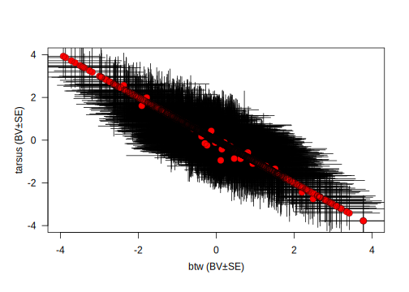
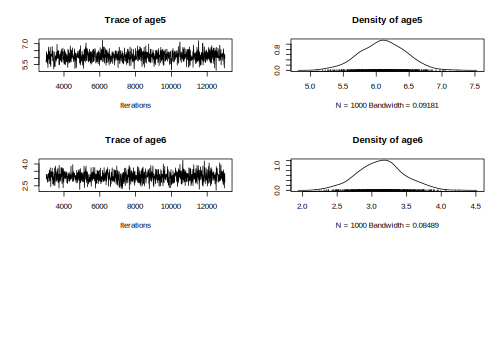
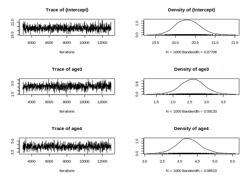
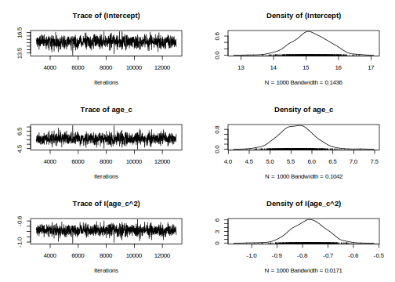
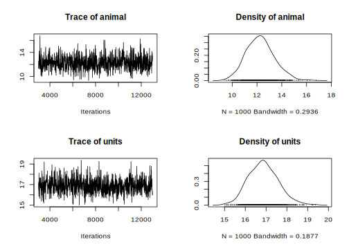
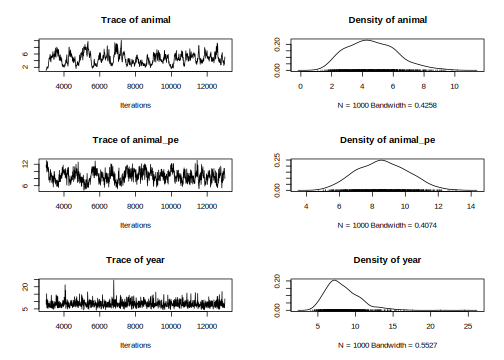
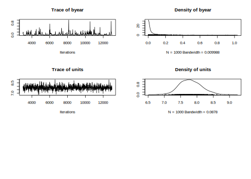

4.4 MCMCglmm
4.4.1 Estimating repeatability
With repeated measures on individuals it is often of interest to see how repeatable a trait is. We can estimate the repeatability of a trait as the proportion of phenotypic variance \(V_P\) explained by individual variance \(V_{ind}\); \(R = V_{ind}/V_P = V_{ind}/(V_{ind}+V_R)\). As you already know, bayesian modelisation requires prior. Here, we create a unformative prior with one estimate for the G matrix and one estimate for the Residual matrix, in addition
#p.var <- var(gryphonRM$laydate, na.rm = TRUE)
prior3.1 <- list(G = list(G1 = list(V = 1, nu = 0.002)), R = list(
V = 1,
nu = 0.002
))
model3.1 <- MCMCglmm(laydate ~ 1,
random = ~animal, data = gryphonRM,
prior = prior3.1, verbose = FALSE
)
posterior.mode(model3.1$VCV)## animal units
## 10.84015 21.63040Note the use of the term animal as random allowed to partition the phenotypic variance \(V_P\) into among individual variance \(V_{ind}\) associated with animal and residual variance \(V_R\) associated with units.
Here then the repeatability of the laydate can be determined as: 22.63 (i.e., as 10.84/(10.84 + 21.63)). Just a friendly remember, we work with Monte Carlo chain with model iteration, so the point estimate can be different (but very similar) each time you run the model.
Mean lay date might change with age, so we could ask what the repeatability of lay date is after conditioning on age. This would be done by adding age into the model as a fixed effect.
model3.2 <- MCMCglmm(laydate ~ age,
random = ~animal, data = gryphonRM,
prior = prior3.1, verbose = FALSE
)
plot(model3.2$Sol)
plot(model3.2$VCV)
posterior.mode(model3.2$VCV)## animal units
## 12.27716 16.57213The model assumption seems correct, so we can look at the different estimates.
Note that the random effect structure has remained unchanged because we did not modified the prior prior3.1.
The repeatability of laydate, after accounting for age effects, is now estimated as22.63 (i.e., as 10.84/(10.84 + 21.63)).
Just as we saw when estimating \(h_2\) in tutorial 1, the inclusion of fixed effects will alter the estimated effect size if we determine total phenotypic variance as the sum of the variance components. Thus, proper interpretation is vital.
plot(model3.2$Sol)
posterior.mode(model3.2$Sol)## (Intercept) age3 age4 age5 age6
## 20.183460 2.289288 4.251726 6.069901 3.277197HPDinterval(model3.2$Sol, 0.95)## lower upper
## (Intercept) 19.724218 20.832820
## age3 1.891526 3.248765
## age4 3.629328 4.914958
## age5 5.443188 6.773146
## age6 2.442343 3.755304
## attr(,"Probability")
## [1] 0.95Here age is modeled as a 5-level factor (specified using the function as.factor() at the beginning of the analysis). We could equally have fitted it as a continuous variable, in which case, given potential for a late life decline, we would probably also include a quadratic term.
In addition, using age as continuous variable can help in saving some degree of freedom in the analysis.
gryphonRM$age_c <- as.numeric(gryphonRM$age)
model3.2_2 <- MCMCglmm(laydate ~ age_c+ I(age_c^2),
random = ~animal, data = gryphonRM,
prior = prior3.1, verbose = FALSE
)
plot(model3.2_2$Sol)
plot(model3.2_2$VCV)
posterior.mode(model3.2_2$VCV)## animal units
## 12.4652 16.8547posterior.mode(model3.2_2$Sol)## (Intercept) age_c I(age_c^2)
## 15.0070566 5.7839990 -0.7691493HPDinterval(model3.2_2$Sol, 0.95)## lower upper
## (Intercept) 14.0637229 16.147764
## age_c 4.9085712 6.389649
## I(age_c^2) -0.9062759 -0.665899
## attr(,"Probability")
## [1] 0.954.4.2 Partitioning additive and permanent environment effects
Generally we expect that the repeatability will set the upper limit for heritability since among individual variation can be decomposed in the additive genetic variation and non additive genetic variation. In other word, the additive genetic variation is a subcomponent of the difference between individuals. Non-additive contributions to fixed among-individual differences are normally referred to as permanent environment effects. If a trait has repeated measures then it is necessary to model permanent environment effects in an animal model to prevent upward bias in \(V_A\).
To illustrate it, we first fit the animal model:
Ainv <- inverseA(gryphonped)$Ainv
model3.3 <- MCMCglmm(laydate ~ 1 + age,
random = ~animal, ginv = list(animal = Ainv),
data = gryphonRM, prior = prior3.1, verbose = FALSE
)Variance components are almost unchanged if we compare the previous model:
posterior.mode(model3.3$VCV)## animal units
## 13.63208 16.90563posterior.mode(model3.2$VCV)## animal units
## 12.27716 16.57213This suggests that most of the among-individual variance is – rightly or wrongly – being partitioned as \(V_A\) here. In fact here the partition is wrong since the simulation included both additive genetic effects and additional fixed heterogeneity that was not associated with the pedigree structure (i.e. permanent environment effects).
In order to o obtain an unbiased estimate of \(V_A\), we need to fit the individual identity twice in the model: once linked to the pedigree (genetic effect) and once not linked to the pedigree (permanent environment effect).To do so, we need to duplicate the variable containing the individual identity animal and give it a new name. In addition, the prior need to be modified to integrate a seconf random effect.An more appropriate estimate of \(V_A\) is given by the model:
gryphonRM$animal_pe <- gryphonRM$animal
#p.var <- var(gryphonRM$laydate, na.rm = TRUE)
prior3.4 <- list(G = list(G1 = list(V = 1, nu = 0.002), G2 = list(
V = 1,
nu = 0.002
)), R = list(V = 1, nu = 0.002))
model3.4 <- MCMCglmm(laydate ~ 1 + age,
random = ~ animal + animal_pe,
ginv = list(animal = Ainv), data = gryphonRM, prior = prior3.4, verbose = FALSE
)
posterior.mode(model3.4$VCV)## animal animal_pe units
## 5.268277 6.712845 16.474657The estimate of\(V_A\) is now much lower (reduced from 13.6735 to 5.1238) due to a proper separation in the additive and permanent environment effects. We can estimate \(h^2\) and the repeatability from this model:
model3.4.VP <- model3.4$VCV[, "animal"] + model3.4$VCV[, "animal_pe"] + model3.4$VCV[, "units"]
model3.4.PE_VA <- model3.4$VCV[, "animal"] + model3.4$VCV[, "animal_pe"]
posterior.mode(model3.4.PE_VA / model3.4.VP)## var1
## 0.4357653posterior.mode(model3.4$VCV[, "animal"] / model3.4.VP)## var1
## 0.17243814.4.3 Adding additional effects and testing significance
Models of repeated measures can be extended to include other fixed or random effects.
For example we can try including year of measurement (year) and birth year (byear) as other random effects.
#p.var <- var(gryphonRM$laydate, na.rm = TRUE)
prior3.5 <- list(G = list(G1 = list(V = 1, nu = 0.002), G2 = list(
V = 1,
nu = 0.002
), G3 = list(V = 1, nu = 0.002), G4 = list(
V = 1,
nu = 0.002
)), R = list(V = 1, nu = 0.002))
model3.5 <- MCMCglmm(laydate ~ 1 + age,
random = ~ animal + animal_pe +
year + byear, ginv = list(animal = Ainv), data = gryphonRM, prior = prior3.5,
verbose = FALSE
)
posterior.mode(model3.5$VCV)## animal animal_pe year byear units
## 4.129219372 8.503677014 6.972578727 0.001652363 7.836321999HPDinterval(model3.5$VCV, 0.95)## lower upper
## animal 1.8070502637 7.7024035
## animal_pe 5.5135401046 11.3205438
## year 4.7717338922 13.1216625
## byear 0.0002457895 0.2184504
## units 7.2179169545 8.4812537
## attr(,"Probability")
## [1] 0.95plot(model3.5$VCV)
This model will return additional variance components corresponding to year of measurement effects and birth year (of the female effects) .
\(V_{byear}\) is very low and its posterior distribution (via the function HPDinterval or plot) is very close to zero indicating its not significance. You have to remember bayesien model never estimate variable to 0 or passing zero, so you will never see a credible interval CI crossing zero for a variance.
If you compared the DIC of model3.5 to a reduced model without byear, it should be very similar.
#p.var <- var(gryphonRM$laydate, na.rm = TRUE)
prior3.5_2 <- list(G = list(G1 = list(V = 1, nu = 0.002), G2 = list(
V = 1,
nu = 0.002
), G3 = list(V = 1, nu = 0.002)),
R = list(V = 1, nu = 0.002))
model3.5_2 <- MCMCglmm(laydate ~ 1 + age,
random = ~ animal + animal_pe +
year, ginv = list(animal = Ainv), data = gryphonRM, prior = prior3.5_2,
verbose = FALSE
)
posterior.mode(model3.5_2$VCV)## animal animal_pe year units
## 4.040191 9.024435 8.110159 7.816669model3.5$DIC## [1] 8291.129model3.5_2$DIC## [1] 8289.873year effects could alternatively be included as fixed effects (try it!, you should be able to handle the new prior specification at this point). This will reduce \(V_R\) and increase the estimates of heritability and repeatability, which must now be interpreted as proportions of phenotypic variance after conditioning on both age and year of measurement effects.